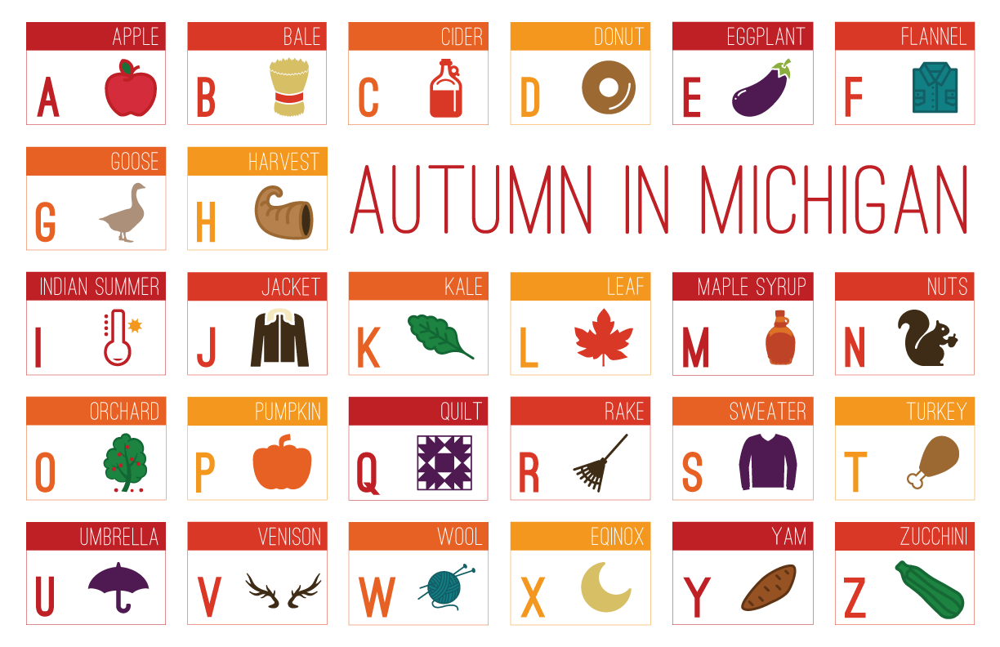

𝕏
Alphabet Poster

Icons used under creative commons license, and modified to add color:
A:
Apple by andriwidodo
B:
hay by Anuar Zhumaev
C:
jug by Luis Prado
D:
Doughnut by I Like Bears
E:
Eggplant by Pavel Melnikov
F:
Shirt by Cezary Lopacinski
G:
Goose by Sergey Demushkin
H:
Cornucopia by Matt Brooks
I:
sun by Shital Patel
J:
Fur Coat by Creative Stall
K:
by Made by Made
L:
leaf by Xinh Studio
M:
Bottle by Ruth Miller
N:
Squirrel by Andre Schauer
O:
fruit tree by Eugene Dobrik
P:
pumpkin by Xinh Studio
Q:
quilt block by Stido Fibonacci
R:
Garden Rake by Creaticca Creative Agency
S:
Sweater by Snugsack
T:
turkey leg by Jardson Almeida
U:
Umbrella by Shahriar Emil
V:
Deer Horns by Alice Noir
W:
knitting by Sitara Shah
X:
Moon by Martin
Y:
Sweet Potato by icon 54
Z:
Zucchini by anbileru adaleru